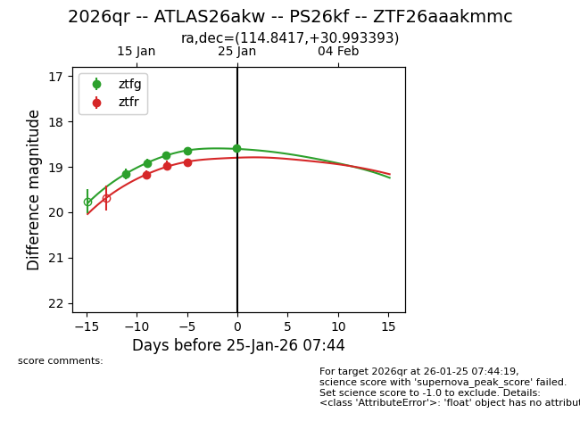
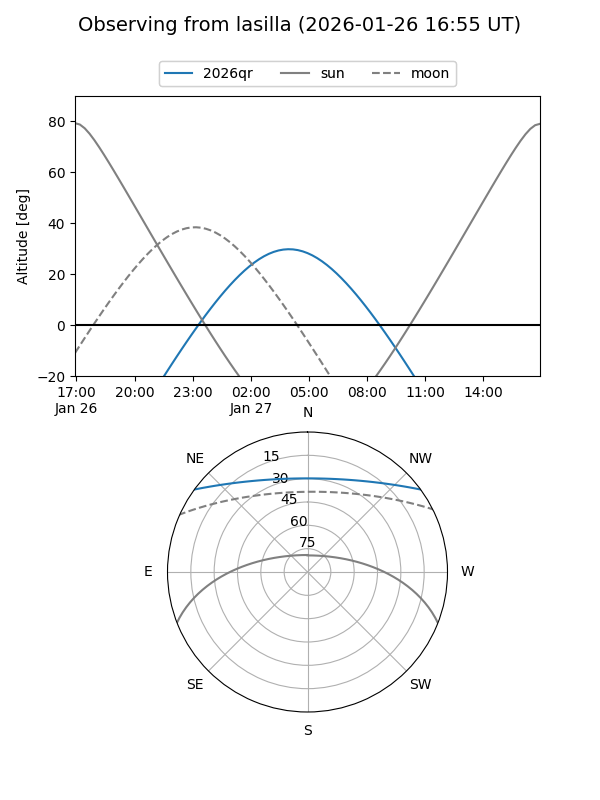
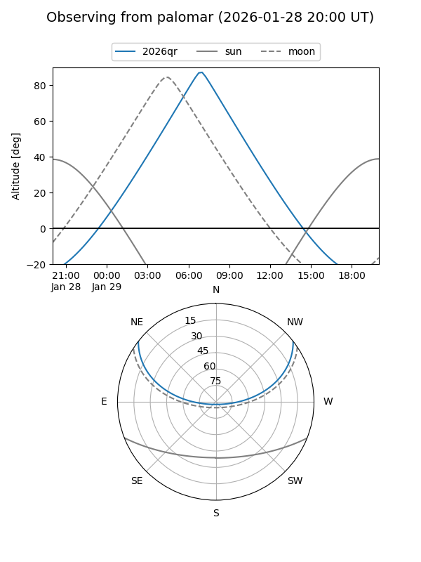
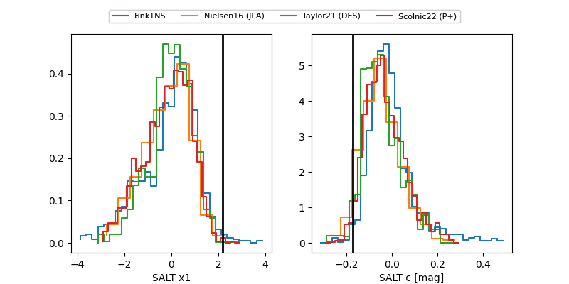

2026qr
Target 2026qr at 2026-01-28 22:36
Aliases and brokers:
FINK: link
Lasair: link
ALeRCE: link
TNS: link
YSE: link
alt names
ZTF26aaakmmc (ztf,fink_ztf)
2026qr (tns,yse)
ATLAS26akw (atlas)
PS26kf (panstarrs)
Coordinates:
equatorial (ra, dec) = 114.8417,+30.99339
equatorial (HMS+DMS) = 07:39:22.00,+30:59:36.21
galactic (l, b) = (188.7160,+23.15328)
Flags:
Photometry:
last atlasc=19.04, atlaso=18.70, ztfg=18.51, ztfr=18.64
2 atlasc, 2 atlaso, 6 ztfg, 4 ztfr detections
Lightcurve

Visibility


Additional plots
